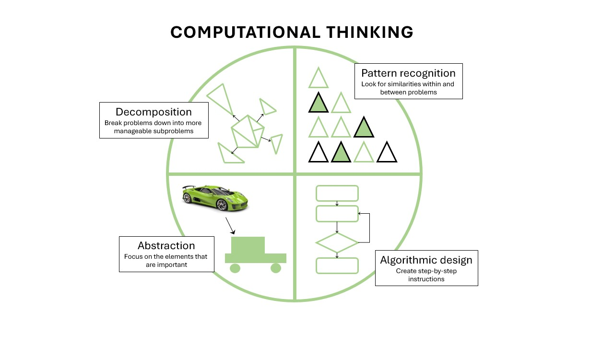

Introduction#
Activity#
What do you think computational thinking is?
What is computational thinking?#
When we program we write a series of commands in a language that our computer understands. We use a combination of functions and syntax to instruct the computer to enact a series of commands. When you sit down to program there is an assumption that you already know:
What you want the computer to do
How it should do it
This part, the design of what the program/code does is where computational thinking comes in.
Computational thinking allows us to take a complex problem, understand what the problem is and develop possible solutions that we can instruct a computer to implement. It is implicit that a human also needs to understand the solution, as they are likely to be the one instructing the computer.
Is this not covered when I learn to code?#
Thinking computationally differs from coding, or computer programming, in that a program tells a computer what to do. Computational thinking enables you to work out exactly what to tell the computer to do. It is a mental task to solve the problem in front of you. These are two separate skills and two separate tasks. Theoretically, you need to be able to perform “computational thinking” before you can start to code. Often we focus on learning to programming, with the content relating to the specifics of the command names and relevant syntax. We don’t always appreciate that we also need to learn how to solve computational problems as well. Sometimes this is included/covered in an introductory programming workshop, but where it is, it is often not explicit.
For example, you might have been taught some common programming constructs such as for loops or if else statements. You will definitely have been taught the block of code you need to write for the computer to execute that construct. You probably also had it explained to you how the for loop works. You will have been shown or encouraged to write and run examples for loops. But you were probably given specific examples were you were instructed to use a for loop. Now this might have seemed a really useful tool to use and you feel confident that you can implement it. However, do you feel confident that you would know what sort of problems a for loop would be a useful tool over other constructs?
We can make an analogy with the teaching of statistics. Often individuals are taught a list of statistical tests and how to perform them. They then get the chance to practice these. At the end they know they can perform a t-test if someone asks or tells them to do so, but what they maybe lack is the ability to identify in their analysis that a t-test is an appropriate choice over a regression analysis. We are teaching you how to use the tools, not how to choose the tools.
Why is this a problem?#
For some simple tasks we can solve and implement the problem simultaneously, there is no harm in not distinguishing the tasks. For some people computational thinking comes naturally, and they can solve and implement more complicated tasks instinctively. However, for most there comes a point when this approach becomes problematic.
The consequence of not separating out these two skills is that you don’t realise that when you sit down to write a new piece of code, you are simultaneously doing both tasks. You can’t write any code until you know what you want that code to do. If you ever go to write some code and you find yourself hovering over the keyboard, it likely this pause is you thinking through what you want the code to do. By not separating the tasks in your mind means that when you inevitably hit upon a bug or error in your code, it is hard to distill whether it is a problem with the code (wrong syntax for example) or whether is a problem with the solution you are trying to implement. Remember, the computer will always do exactly as you ask. If it is not behavior as your predicted or desired, you are probably not asking it to do the right thing.
The purpose of this workshop is to step back from coding and focus on how to design computational solutions. We will cover some fundamental concepts and techniques related to designing computer programs. Our intention is to encourage you to code with more forethought, and be able to delineate which errors relate to the construction of the code and which errors relate to the construction of the solution. In this way you should become a more effective coder and trouble shooter.
How do I think computationally?#
There are four key processes involved. We are going to cover each of these over the next two sessions and use lots of playful exercises to demonstrate how to implement them.

At the end of the workshop you will be able to:
define what an algorithm is
design an algorithm by implementing the following techniques:
decomposition - break a complex task into smaller units
pattern recognition - identify repetitive elements in your task that can be automated
abstraction - focus in on the essential components needed to complete the task